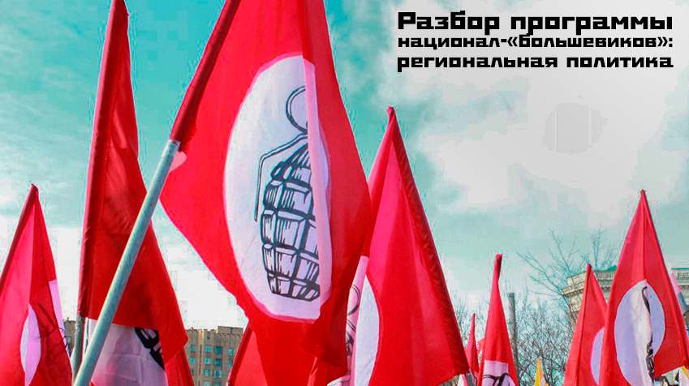

БЛОК РЕГИОНАЛЬНОЙ ПОЛИТИКИ (разбор программы 2010)

Доброго времени суток, товарищи! Заканчиваем разбирать программу 2010-го года партии «Другая Россия». Последний блок в ней посвящён региональной политике. Итак, что же нам предлагают?
«- Исходя из положения Конституции РФ, согласно которому Россия - федеративная республика, партия "Другая Россия" будет добиваться реального соблюдения принципов федерализма. Русский так называемый "национализм" есть всего лишь здоровое проявление национальной идентичности. Также и политика на Кавказе должна быть основана на понимании особенностей мусульманских регионов, а не на тупом насилии, как сейчас. Там, где большинство населения этого желает, следует дать возможность людям жить в соответствии с законом шариата. Россия станет только сильнее. Партия будет относиться с пониманием к особенностям как русских, так и мусульманских регионов.
Помимо вышеперечисленных основных направлений, партия "Другая Россия" проведет значительные преобразования во всех областях жизни страны.
- Кадры. Поощрим смену элит. Управляющий Россией класс, так называемая "элита" - чиновники федеральные и местные, политический класс, генералы и офицеры от экономики, от армии и милиции, от судейства - унаследован Россией от СССР. Номенклатура лишь сменила вывески. Эта старая элита неэффективна и большей частью тормозит развитие страны, с ней невозможна необходимая стране модернизация. Осуществим набор новых людей в элиту. Набор будет идти из молодежи, провинциалов, из членов оппозиционных организаций. Миллионы получат возможность судьбы, совпадающей с судьбой страны. Применят свои таланты.
- Гражданские права. Дадим свободно развиваться гражданскому обществу. Поощрим инициативу граждан и развитие гражданского самоуправления на всех уровнях.
- Социальное обеспечение. Создадим систему льгот для нуждающихся. Отменим, одновременно, привилегии для чиновников. Пенсионный возраст оставим неизменным.
- Внешняя политика. Сделаем национальные интересы России основой отношений с другими странами и народами. Создадим систему защиты и поддержки граждан России в любой точке мира. Особенно обратим внимание на поддержание дружеских отношений со странами - бывшими республиками СССР. Никогда не упустим из виду намерение создать однажды прочный союз народов, некогда входивших в СССР.
- Армия. Отменим призыв в армию немедленно. Создадим профессиональную армию из добровольцев. Для осуществления особо важных воинских операций создадим в рамках российской армии подразделение под названием "Иностранный легион", где будут служить профессиональные солдаты-иностранцы на благо России.
- Образование. Целью обучения в средней школе сделаем творческое развитие личности. Высшее образование будет бесплатным.
- СМИ. Освободим средства массовой информации от диктата федеральной и местной власти. Цензура СМИ, в том числе и в Интернете, будет запрещена, а попытки давления на прессу будут пресекаться и преследоваться по закону.
- Демография. Развернем систему пропаганды рождаемости. Введем в практику кажущееся сегодня экстравагантным "материнство за зарплату". Запретим усыновление российских детей иностранцами. О них позаботится государство.
- ФСБ и МВД. Запретим политический сыск. Расформируем подразделения по борьбе с "экстремизмом". Урежем функции ФСБ и МВД, а их деятельность поставим под контроль парламента России. Введем выборность начальников милиций и участковых.
- ФСИН. Гуманизируем систему исполнения наказаний. Будем регулярно проводить амнистии заключенных разных категорий.
- Религия. Россия останется светским государством. Все религиозные конфессии будут равны для государства и одинаково уважаемы.
- Наука. Научная деятельность будет поощряться и финансироваться и государством, и частными лицами. Как и полагается в современной стране.
- Экология. Будем развивать экологически чистые технологии, субсидировать исследования по поиску новых источников энергии. Ввоз в Россию ядерных отходов из других стран будет запрещен.
- Культура. Будет развиваться свободно. Никакой цензуры не будет в свободной России».
Перейдем сразу к национальной политике нацболов:
«Партия будет относиться с пониманием к особенностям как русских, так и мусульманских регионов».
Вот любим мы это «понимание»! Каждый раз, когда национальную политику нашего государства кто-то предлагает строить основываясь на интересах исключительно русского народа, интересы других народов, веками проживающих в России, и национальных меньшинств как-то размываются и подменяются вот этим самым «пониманием». Да и вообще, первый пункт забавный: русский национализм в их представлении есть всего лишь здоровое проявление национальной идентичности. Далее:
«Там, где большинство населения этого желает, следует дать возможность людям жить в соответствии с законом шариата».
Это они, понятно, о мусульманских регионах. На самом деле, это звучит так: «Мы, конечно, русские националисты, но – толерантные, и будем вас терпеть («понимать»), национальные окраины. Живите в России, но только трудиться вы должны на благо русского народа. Обещаем, что никаких притеснений не будет, только если чуть-чуть».
Национальный вопрос – это крайне сложная тема. Возможно, это самый важный вопрос для любого государства. Применительно к нашей стране я бы назвал его многонациональным вопросом. Чтобы сохранить необходимый баланс, должно быть так:
- дать нетитульному народу столько автономии, чтобы он не захотел выйти из состава огромного государства;
- при этом не переборщить с ней, чтобы не будить ложное чувство собственной важности и не поощрять национализм и сепаратизм, которые, как известно, чреваты войной.
Вот типичный убогий посыл русских националистов/имперцев: «Как только государство российское начинает развивать в национальных окраинах, например, систему образования, так у них сразу вылупляется национализм и стремление немедленно образовать собственное государство! Нельзя там ничего развивать, надо их просто терпеть. И понимать». Вот раньше в императорской России к инородцам и иноверцам как раз относилось с такой позиции.
Мы должны понимать принцип многонационального государства. Проблема связана с автономией и широтой этой автономии. И то, и другое – большая крайность. То есть, мы скатываемся либо к свёртыванию национальной автономии и усилению централизма, либо мы строим такую автономию, что достаточно одного шага, чтобы автономная республика вышла из состава государства и получила возможность при одобрении местных элит взращивать национализм. Народ, проживающий в рамках одного государства исторически достаточно долго, который с этим государством исторически составляет единое целое в культурном и прочих смыслах, может отделиться только по одной причине: если его бессовестно эксплуатировали десятками и сонями лет. А когда государственная вертикаль власти ослабла, этот народ образует своё, пусть даже и маленькое, но независимое государство. «Только не с вами!». Это к вопросу о том, что российская империя сделала всё, чтобы из её состава вышли все, кто хотел и мог. И спасибо большое «кровавым большевикам», которые смогли убедить всех, кто вышел, в том, что в рамках союзного государства им жить будет удобнее, помогая и эффективно взаимодействуя друг с другом.
А дальше начинается самое интересное: скатывание в безудержный либерализм, причём, зачастую под внешним контролем, так как маленькое государство не может долго без более сильного и состоятельного куратора. И этот куратор тут же принимается форматировать маленький (или не очень маленький), но страшно гордый и независимый народ под свои задачи. Слишком много ничем не ограниченной свободы, непрерывные манифестации, иллюзия, что толпа может что-то решить – это большая проблема. Когда мусульмане нам говорят, что будут жить по законам шариата, у меня возникает вопрос: это вы в рамках единого – светского! – государства планируете децентрализацию судебной системы? А потом вы перестанете пускать на свою территорию тех, кто исповедует иную религию и заявите, что федеральный закон имеет второстепенное значение? Вы, может, сепаратисты?
Если мы посмотрим, например, на советские конституции, то увидим, что в них, как и в современной Российской, есть понятие «разграничение полномочий». Есть вопросы, подведомственные субъектам государства, а есть – центральному правительству. И вот в рамках вопросов, подведомственных регионам, можно создать местные суды. Но работать они должны в строгом соответствии с законами Российской Федерации, а не по шариату. Давайте еще право ордалии введём (божий суд), а почему нет? У нас наверняка найдутся всевозможные родноверы, неоязычники и прочие, которые захотят жить по Русской правде, по жребию, начнут устраивать судебные поединки и т.д. Патриотично?
«Поощрим смену элит».
То есть, долой старую элиту, даёшь новую! Сам факт, что нацболы хотят сохранить некие «элиты», уже не просто наводит на подозрения, а прямо-таки заявляет об истинной природе этих так называемых «большевиков». Причём, они в качестве управляющего класса России выделяют чиновников, судей, генералов, офицеров от экономики, армии, полиции. Капиталисты из этого ряда выпали. Или они как бы растворены в вышеперечисленных категориях.
Также в новую элиту планируется включить молодежь, провинциалов из членов оппозиционных организаций.
«Миллионы получат возможность судьбы, совпадающей с судьбой страны».
У нас миллионы элит появятся? Миллиарды? Значит, раньше «все к станку!», а сейчас «все в элиты!». Про новую индустриализацию, однако, ничего не сказано. Нужны только элиты и национализация недр. Нормально заживём! Классовая структура общества, понятно, сохраняется. Новые элиты, естественно, будут эксплуатировать все остальное население: как национальные республики, так и регионы, населенные, в основном, представителями титульной нации. Возможно, термин применён неправильно, но, с другой стороны, это программный документ, где каждое слово выверяется.
Нужно отметить, что они очень чётко обозначают важную проблему: элита, замкнувшаяся на себе и на своих родственниках, родственниках родственников, детях и т.п., не способна воспроизводить ничего достаточно качественного для управления государством. Она как бы замкнута на самой себе, а значит ничего кроме самой себя она порождать не может. Следовательно, мы опять получим общество и государство, находящиеся в стагнации. Мы знаем, что по законам диалектики необходим переход в новое качество, в противном случае – гибель и разложение. Новая элита качественного перехода обеспечить не сможет.
Тезис о том, что нужно привлекать молодежь, по сути, правильный. Молодежь энергична, она обладает необходимым запалом, желанием двигаться вперёд и не боится изменений.
«Гражданские права. Дадим свободно развиваться гражданскому обществу. Поощрим инициативу граждан и развитие гражданского самоуправления на всех уровнях».
Что такое гражданское общество? Это буржуазный термин. Основой гражданского общества является «священный характер» частной собственности на средства производства. Не вижу тут даже намёка на большевизм. Видимо, всё что они взяли от большевизма, это возможность периодически выкрикивать «Ленин! Сталин!».
«Армия. Отменим призыв в армию немедленно. Создадим профессиональную армию из добровольцев. Для осуществления особо важных воинских операций создадим в рамках российской армии подразделение под названием "Иностранный легион", где будут служить профессиональные солдаты-иностранцы на благо России».
А как же «вооружить народ»? Куда делась народная милиция? А как же то, что весь народ должен защищать своё социалистическое государство? Впрочем, насколько «эффективной» является профессиональная армия, мы можем судить, наблюдая за ходом боевых действий на Украине.
«ФСБ и МВД. Запретим политический сыск. Расформируем подразделения по борьбе с «экстремизмом».
Получается, надо уничтожить структуры, которые являются основой крепкого и суверенного государства, и запретить деятельность, являющуюся жизненно необходимой. Представляете большевиков, которые боролись с вражескими разведками и посягательствами извне без ЧК, НКВД и «политического сыска»? Но, видимо, у нас при «Другой России» ничего страшного не произойдёт: старые элиты мирно уступят кормушку молодым, Евросоюз и Америка нас страшно полюбят, поэтому свернут свою подрывную деятельность. Начнется истинная демократия с правильными капиталистами, переживающими за Россию, и в целом всё будет чудесно!